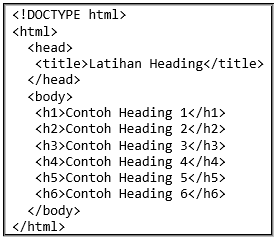
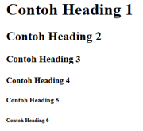
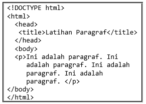
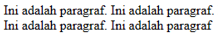
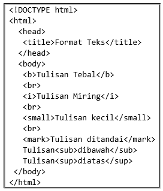
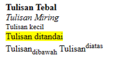
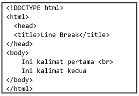
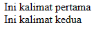

Tag heading berfungsi untuk memformat heading (judul dan subjudul) dari suatu halaman web.
Heading ini akan memperbesar ukuran huruf unruk setiap jenis heading. Ada 6 buah heading yang dikenal di HTML,
yaitu dari <h1> sampai <h6>.Setiap jenis heading memiliki ukuran huruf
yang berbeda, dengan <h1> sebagai heading terbesar dan <h6> sebagai heading terkecil. Contohnya :

Hasilnya

Elemen p digunakan untuk mengelompokkan teks menjadi paragraf yang berdiri sendiri, yang biasanya dibentuk oleh beberapa
kalimat atau beberapa baris teks. Tag HTML untuk paragraf adalah <p> dengan tag penutup </p>. Penggunaan tag
<p> adalah cara yang baik untuk mengelompokkan teks ke dalam unit informasi yang lebih besar dan lebih mudah dibaca oleh pengguna.
Contohnya :

Hasilnya

Penggunaan format teks HTML melibatkan penggunaan berbagai elemen HTML untuk mengontrol tampilan dan struktur konten
teks pada halaman web. Berikut ini adalah beberapa tag yang sering digunakan untuk mengatur format teks HTML :
| Tag | Deskripsi |
| <b> | Mendefinisikan teks tebal |
| <em> | Mendefinisikan teks menekankan |
| <i> | Mendefinisikan teks miring |
| <small> | Mendefinisikan teks kecil |
| <strong> | Mendefinisikan teks penting |
| <sub> | Mendefinisikan teks bawah garis |
| <sup> | Mendefinisikan teks di atas garis |
| <ins> | Mendefinisikan teks sisipan |
| <del> | Mendefinisikan teks dicoret |
| <mark> | Mendefinisikan teks ditandai |
Contohnya :

Hasilnya

Baris baru atau line break sangat diperlukan untuk penulisan dalam dokumen HTML.
Dalam HTML line break dapat digunakan untuk membuat baris baru layaknya fungsi tombol enter pada keyboard.
Line break menggunakan tag <br>.
Contoh :

Hasilnya

PBerikut adalah beberapa tag HTML yang sering digunakan untuk menandai Citations (kutipan),
Quotations (petikan), dan Definition (definisi):
| Tag | Deskripsi |
| <abbr> | Mendefinisikan sebuah singkatan |
| <address> | Mendefinisikan alamat atau kontak informasi |
| <bdo> | Mendefinisikan arah teks |
| <blockquote> | Mendefinisikan sebuah bagian yang dikutip dari sumber lain |
| <q> | Mendefinisikan sebuah kutipan pendek |
| <cite> | Mendefinisikan judul karya |
| <dfn> | Mendefinisikan sebuah istilah |
Dengan menggunakan tag-tag di atas, dapat menandai kutipan, petikan, dan definisi dengan cara yang jelas dan sesuai dengan aturan HTML. Hal ini membantu meningkatkan pemahaman konten dan membantu pengguna membedakan bagian-bagian khusus dari teks.
Video Penjelasan Format Teks
Video Latihan Praktikum
Video Latihan Praktikum